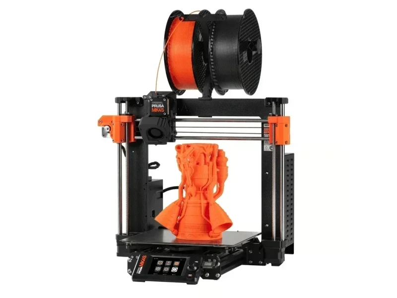

Build volume
250 x 210 x 220 mm (manufacturer figure)
Advertised dimensions; check usable space and variants.
Cartesian bed-slinger with a load-cell nozzle probe, quick-swap high-flow nozzle and 360-degree part cooling, sold assembled or as a kit.

250 x 210 x 220 mm (manufacturer figure)
Advertised dimensions; check usable space and variants.
290 C claimed max nozzle temperature on the MK4S product page (Prusa's MK4 announcement table gave 300 C for the MK4)
Published limits; hardware and firmware limits may differ.
$925.00 assembled, $657.40 as a kit, on prusa3d.com, Aug 2026. Bundles: $1,171.11 with MMU3, $1,185.65 with the Enclosure, $1,438.33 with both
Dated listing, not a live offer. Read the configuration and region.
Every recorded value stays with its conditions and original sources. Manufacturer claims and independent measurements are kept distinct.
Dimensions, construction and the hardware that moves the print.
| Property and unit | Published value and conditions | Sources and dates |
|---|---|---|
| Manufacturer & exact marketed model name (verify the exact product identity first) | Original Prusa MK4S (Prusa Research, Prague). Sold as "Original Prusa MK4S 3D Printer" and "Original Prusa MK4S 3D Printer kit" | 2 sources |
| Release date (announcement and actual shipping) | Announced and available to order on 12 August 2024, the date of Prusa's launch blog post, with assembled printers, kits and an MK4S/MMU3 bundle in stock at announcement | 1 source |
| Street price (USD; dated snapshot per entry) | $925.00 assembled, $657.40 as a kit, on prusa3d.com, Aug 2026. Bundles: $1,171.11 with MMU3, $1,185.65 with the Enclosure, $1,438.33 with both | 2 sources |
| Variants & sibling models — and how to tell them apart (spec-contamination risk) | The MK4S is a revision of the MK4, not a new platform: Prusa sold a $99 upgrade kit that gives an MK4 all of the MK4S features (360-degree turbine part cooling, high-flow CHT nozzle, firmware and profile changes). Watch the published nozzle ceiling: Prusa's MK4 announcement table says 300 C, while the MK4S product page says 290 C. Related family members are the MK3.5 and MK3.9 upgrades of the MK3S+, which are not the same machine. With the MMU3 the standard (non-high-flow) nozzle is the recommended one | 3 sources
|
| Market position: superseded? successor announced? | Still sold in Aug 2026 as the entry point to the Nextruder line, positioned below the enclosed CORE One+ (Gen 2). Prusa also sells an MK4S-to-CORE One+ (Gen 2) conversion kit | 2 sources |
| Property and unit | Published value and conditions | Sources and dates |
|---|---|---|
| Build volume X×Y×Z (mm) — advertised vs actually usable | 250 x 210 x 220 mm (manufacturer figure) | 1 source |
| Machine footprint (mm) & clearance needed (cable/spool overhang) | 500 x 550 x 400 mm (X x Y x Z), stated without the spool holder | 1 source |
| Net weight (kg) | 7 kg (without spool) | 1 source |
| Frame construction & material | Aluminium extrusions and frame. Prusa's MK4 announcement records that the cut-aluminium frame of the MK3S+ was replaced by a die-cast aluminium frame for the MK4 platform, which the MK4S inherits | |
| Enclosure: open / enclosed; panel material; door/lid | Open frame. The Original Prusa Enclosure is a separate add-on and raises the achievable chamber temperature to 45 C; there is no active chamber heating | 1 source |
| Property and unit | Published value and conditions | Sources and dates |
|---|---|---|
| Kinematics (bedslinger i3 / CoreXY / other) | Cartesian bed-slinger - Prusa's own comparison table gives "Cartesian" for the MK4S against "CoreXY" for the CORE One and CORE One L | 1 source |
| Stepper motors (frame size, step angle, brand if known) | 0.9 degree X and Y stepper motors, which Prusa states are used to prevent vertical fine artefacts | 1 source |
| Stepper drivers (exact model e.g. TMC2209; UART/SPI; sensorless homing?) | Trinamic 2130. The MK4 announcement is more specific: TMC2130-LA drivers on the xBuddy board |
Extrusion, heating, leveling and material handling.
| Property and unit | Published value and conditions | Sources and dates |
|---|---|---|
| Type (direct drive / bowden) & design name | Nextruder, direct drive, E3D V6 compatible with an adapter; Nextruder planetary gear system with a 10:1 gearbox ratio; aluminium heatsink and all-metal filament path | 1 source |
| Gear ratio & drive gear material | 10:1 planetary gearbox in the Nextruder | 1 source |
| Property and unit | Published value and conditions | Sources and dates |
|---|---|---|
| Hotend design (proprietary/standard; quick-swap mechanism?) | Quick-swap Prusa nozzle system with an all-metal filament path; the MK4S ships with the high-flow Prusa brass CHT 0.4 mm nozzle. Standard (non-CHT) Prusa nozzles remain usable and are the recommended choice with the MMU3 | 2 sources |
| Max nozzle temp claimed AND firmware max temp limit (both values) | 290 C claimed max nozzle temperature on the MK4S product page (Prusa's MK4 announcement table gave 300 C for the MK4) |
| Property and unit | Published value and conditions | Sources and dates |
|---|---|---|
| Max bed temp claimed AND firmware limit | 120 C max heatbed temperature (manufacturer figure) | 1 source |
| Bed surface (material, texture, coating), single/double-sided | Magnetic heatbed with removable double-sided PEI spring-steel sheets; smooth PEI sheet supplied | 1 source |
| Property and unit | Published value and conditions | Sources and dates |
|---|---|---|
| Auto bed leveling: probe technology (inductive / strain gauge / load cell / touch probe) | Load-cell sensor in the toolhead - the nozzle itself is the probe. First-layer calibration and mesh bed levelling over the print area only are fully automatic, with no Live Adjust Z step |
| Property and unit | Published value and conditions | Sources and dates |
|---|---|---|
| Filament runout sensor (type, location) | Filament sensor fitted as standard; on the MK4 platform this is a built-in Hall sensor that also drives automatic filament loading |
| Property and unit | Published value and conditions | Sources and dates |
|---|---|---|
| Part-cooling fan(s): count, size, ducting design | High-performance turbine part-cooling fan with a 360-degree air-delivery duct - the headline change from the MK4, derived from work on Prusa's HT90 industrial machine. Fan RPM is monitored in firmware | 2 sources |
| Property and unit | Published value and conditions | Sources and dates |
|---|---|---|
| Officially supported filament list | PLA, PETG, Flex, PVA, PC, PP, CPE, PVB; ABS, ASA, HIPS and PA only when using the Original Prusa Enclosure with the filtration add-on | 1 source |
Firmware, controls, connections and calibration.
| Property and unit | Published value and conditions | Sources and dates |
|---|---|---|
| Mainboard model & MCU (exact chip markings if teardowns exist) | Custom 32-bit xBuddy board with an STM32 MCU, designed, manufactured and tested in-house, plus a custom extruder breakout board for fans and thermistors | |
| PSU (brand, wattage, rail voltage) | 240 W PSU custom-made by Delta with hardware power-panic support | 1 source |
| Total rated power draw | Power consumption 80 W on PLA settings, 120 W on ABS settings (manufacturer figures) | 1 source |
| Property and unit | Published value and conditions | Sources and dates |
|---|---|---|
| Firmware base & current version (Klipper fork / Marlin fork / proprietary) | Open-source Prusa Buddy firmware. The source tree (prusa3d/Prusa-Firmware-Buddy on GitHub) explicitly covers the Original Prusa MINI/MINI+, MK4, XL and CORE One and was last pushed to in August 2026. Updates are applied from a USB drive, through Prusa Connect or through the Prusa mobile app |
| Property and unit | Published value and conditions | Sources and dates |
|---|---|---|
| Display: size, type, touch? | 3.5-inch 65k-colour graphic screen with touch control | 1 source |
| On-device UI capabilities (model preview, per-object controls, etc.) | On-device colour UI with G-code preview and one-click printing; remote control and firmware updates through Prusa Connect and the Prusa mobile app | 1 source |
| WiFi (band/standard), Ethernet, USB ports, SD/flash-drive | Ethernet, Wi-Fi via the ESP module delivered with the printer, USB drive for print files, plus an NFC receiver used to hand over Wi-Fi credentials from the phone app | 3 sources
|
| Property and unit | Published value and conditions | Sources and dates |
|---|---|---|
| Assembly level & time from unbox to first print | Sold both assembled (plug-and-print after a 10-minute self-test) and as an assembly kit | 1 source |
Published safeguards, support terms and independent evidence.
| Property and unit | Published value and conditions | Sources and dates |
|---|---|---|
| Thermal runaway protection (verify in firmware source if at all possible) | The xBuddy platform carries hardware overcurrent protection that disconnects heater and heatbed power when total current exceeds 15 A, and the firmware is open-source and auditable. Prusa also shipped Thermal Model protection to the earlier MK3 line | |
| Certifications (UL/ETL/CE/FCC — verify, don't assume) | Prusa states the MK4S is the first consumer 3D printer to receive UL GREENGUARD certification | 1 source |
| Property and unit | Published value and conditions | Sources and dates |
|---|---|---|
| Warranty length & support reputation (evidence, not vibes) | 2-year warranty for consumers in the EU, Liechtenstein, Switzerland, Norway and Iceland; 1 year for EU enterprises and 1 year for the rest of the world, which includes the United States. A printer bought from a reseller or privately carries 1 year from the original delivery date and is handled by the reseller. Prusa advertises 24/7 chat and e-mail support in seven languages | 2 sources
|
| Spare parts availability & pricing (nozzle, hotend, plate, board, belts) | Prusa cites a perfect 30/30 print-quality score from TechRadar and a CNET "Best Printer for Quality" title; these are quoted on Prusa's own page and were not verified against the original reviews here | 1 source |
This guide presents the catalog’s sourced record for this exact model. Source dates belong to each reference; a page update does not mean every specification has been rechecked.
Prices are dated listing snapshots, with configuration, regional and sale conditions. They are not current offers. Unknown values remain unfilled.
Firmware, variants and available accessories can change. Read the original reference before making a purchase or planning a process.